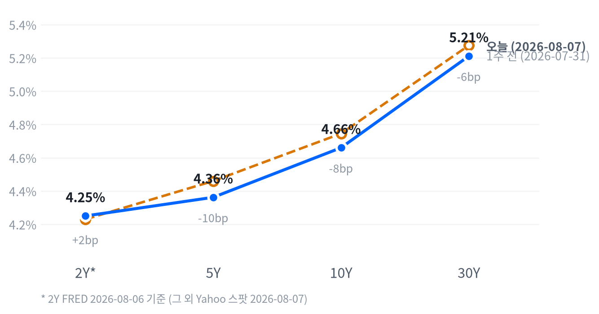

이날 시장을 움직인 단일 동인은 7월 비농업고용 -2.3만명이라는 서프라이즈였다. 월가 컨센서스(+80~83K)를 큰 폭으로 하회한 이 수치는 실업률 하락(4.2%→4.1%)에도 불구하고 경제활동참가율 둔화가 반영된 결과로 해석되며, 평균시급 증가율도 전년 대비 3.2%로 2021년 5월 이후 최저치를 기록해 노동시장 냉각 신호가 뚜렷했다. 시장은 이를 "나쁜 뉴스가 좋은 뉴스"로 받아들여 국채금리 하락·주가 상승·금 급등이라는 전형적인 되돌림 패턴을 만들어냈다.
크로스에셋 정합성은 대체로 높았다. 국채금리(5Y·10Y·30Y 하락), 주식(S&P500 사상 최고 종가), 금(7주 최고치), 달러(약세) 모두 "금리인하 기대 확대"라는 하나의 서사로 수렴했다. 다만 WTI가 나홀로 약세를 보인 점과, 메모리주(SK하이닉스·웨스턴디지털·시게이트)가 거시 재료와 무관하게 자체 공급과잉 우려로 급락한 점은 예외였다. 이는 이번 랠리가 매크로 하나의 축으로만 설명되지 않으며, 종목·섹터 고유의 펀더멘털 재료가 동시에 작동하고 있다는 점을 보여준다.
다음 촉매는 9월 16일 FOMC와 그 사이에 발표될 8월 고용지표(9월 초), 그리고 7월 CPI(8월 중순 발표)다. CME FedWatch 상 9월 인상 확률이 이번 지표로 약 57%에서 43.9%로 급락하고 동결 확률이 56.1%로 오른 만큼(CNBC, 2026-08-07), 다음 CPI가 디스인플레이션 추세를 재확인해주는지가 이 되돌림의 지속 여부를 가를 것이다. 코히런트(8/12)·루멘텀(8/11) 실적도 AI 인프라·광학 밸류체인 랠리의 펀더멘털 뒷받침 여부를 확인할 단기 이벤트로 주목할 만하다.
| 지수 | 종가 | 등락 | 등락률 |
|---|---|---|---|
| 나스닥종합 | 26,690.62 | +342.27 | +1.30% |
| 러셀2000 | 3,034.49 | +32.94 | +1.10% |
| S&P500 성장주 | 142.10 | +0.99 | +0.70% |
| S&P500 | 7,757.64 | +47.68 | +0.62% |
| S&P500 가치주 | 235.78 | +1.16 | +0.49% |
| 다우존스 | 54,036.93 | +151.83 | +0.28% |
| 섹터 | 종가 | 등락 | 등락률 |
|---|---|---|---|
| 임의소비재 | 119.86 | +1.76 | +1.49% |
| 기술 | 187.97 | +2.64 | +1.42% |
| 소재 | 52.86 | +0.69 | +1.32% |
| 헬스케어 | 165.68 | +1.23 | +0.75% |
| 유틸리티 | 43.61 | +0.23 | +0.53% |
| 리츠 | 44.98 | +0.17 | +0.38% |
| 산업재 | 185.18 | +0.42 | +0.23% |
| 커뮤니케이션 | 111.25 | +0.07 | +0.06% |
| 필수소비재 | 85.12 | +0.01 | +0.01% |
| 금융 | 57.60 | -0.21 | -0.36% |
| 에너지 | 57.50 | -0.66 | -1.13% |
나스닥은 개장가(26,546.68) 대비 오전 10시에 -0.26% 저점을 찍은 뒤 되돌림에 들어가 오후 3시30분 고점(+0.62%) 부근에서 마감했다. 고용보고서가 발표된 개장 초반 변동성이 컸던 이유는 실업률 하락과 고용 감소가 동시에 나온 지표를 시장이 소화하는 데 시간이 걸렸기 때문으로, 이후 국채금리 하락이 확인되며 매수세가 유입됐다.
S&P500도 같은 오전 10시에 -0.21% 저점을 만들었지만 반등 시점은 나스닥보다 일렀다 — 11시30분에 이미 고점(+0.36%)을 찍고 이후 상승분 일부를 반납하며 마감해, 대형 기술주 중심의 나스닥이 오후 늦게까지 매수세를 더 길게 흡수한 것과 대조된다.
러셀2000은 개장가(3,009.54)가 곧 저가였고 이후 장 마감 직전(오후 3시)까지 거의 일직선으로 우상향해 고점(+0.92%) 부근에서 마감했다. 금리 민감도가 높은 소형주가 고용 서프라이즈발 금리 하락을 가장 뚜렷하게 반영하며 대형주 대비 리레이팅 폭이 컸다는 해석이 가능하다.
엔비디아는 개장 직후 09시30분 저점(-0.60%)까지 밀렸다가 11시30분 고점(+1.24%)까지 급반등한 뒤 상승폭을 일부 되돌리며 +2.27%로 마감, AI 반도체 대장주 특유의 변동성이 지수 대비 배가되는 모습을 재확인시켰다.
업종 로테이션은 전형적인 "금리 하락 수혜" 패턴을 그대로 따랐다. 임의소비재·기술·소재가 상위권을 차지했고 금융과 에너지만 하락하며 마감해, 시장이 이번 고용 서프라이즈를 순수한 디스인플레이션·금리인하 재료로 받아들였음을 보여준다.
S&P500 성장주(+0.70%)가 가치주(+0.49%)를 앞섰고 러셀2000(+1.10%)이 S&P500(+0.62%)을 웃돈 점은 듀레이션이 긴 자산일수록 이번 금리 하락의 수혜를 더 크게 받았다는 뜻이다. 다만 금융 섹터가 유일하게 대형 섹터 중 뚜렷한 약세(-0.36%)를 보인 점은 순이자마진 압박 우려가 여전히 살아있다는 신호로, 포지션을 늘릴 때 금리 하락 수혜주 안에서도 은행·보험 익스포저는 선별할 필요가 있다.
| 만기 | 2026-08-07 종가 | 전일比(bp) | 1주 전 | 주간 변화(bp) |
|---|---|---|---|---|
| 2Y* | 4.25% | +7.0bp | 4.23% (07-30) | +2.0bp |
| 5Y | 4.362% | -2.7bp | 4.460% (07-31) | -9.8bp |
| 10Y | 4.660% | -1.0bp | 4.745% (07-31) | -8.5bp |
| 30Y | 5.211% | -0.2bp | 5.275% (07-31) | -6.4bp |

2s10s 스프레드는 41.0bp(2Y FRED 08-06 vs 10Y Yahoo 08-07 기준)로, 동일자 FRED 기준으로는 44.0bp다. 두 값의 차이는 3bp로 크지 않아 날짜 불일치보다는 실제 스프레드 수준으로 봐도 무방하다.
다만 2Y가 FRED 랙 때문에 고용쇼크가 반영되기 하루 전(08-06) 시점을 담고 있다는 점은 유의해야 한다 — 즉 이번 금리 하락은 5Y·10Y·30Y에는 이미 반영됐지만 2Y에는 아직 반영되지 않았을 가능성이 커서, 2Y가 포함된 2s10s 스프레드로 당일 커브 형태를 단정하기는 이르다.
같은 기준일(야후, 08-07)로만 비교 가능한 5s30s 스프레드는 84.9bp로, 이날 5Y가 -2.7bp, 30Y가 -0.2bp 하락해 벨리가 장기물보다 더 크게 떨어지는 완만한 불 스티프닝(bull steepening)이 나타났다. 주간 기준으로도 5Y가 -9.8bp, 30Y가 -6.4bp 하락해 5s30s 스프레드가 한 주간 확대되는 동일한 방향성을 보였다.
2Y의 주간 변화(+2.0bp, FRED-FRED 비교)까지 종합하면 이번 주 커브는 전반적으로 벨리~장기물 중심의 불 플래트닝(2s10s 압축) 성격이 강했다고 볼 수 있는데, 전단(2Y)의 변화 폭이 미미해 이 결론은 참고용으로만 받아들이는 편이 안전하다. 듀레이션 전략 관점에서는 이번 고용쇼크가 아직 전단 금리에 온전히 반영되지 않았다는 점을 활용해, 2년물 익스포저를 지금 선제적으로 확대하고 벨리~장기 구간은 이미 반영된 만큼 추가 매수보다는 보유·롤다운 전략이 유리해 보인다.
손절 기준은 다음 CPI(8월 중순 발표)나 ISM 물가지표가 예상보다 뜨겁게 나와 커브가 다시 베어 스티프닝으로 돌아설 경우로 잡는다.
| 통화쌍 | 종가 | 등락 | 등락률 |
|---|---|---|---|
| 달러인덱스(DXY) | 99.60 | -0.37 | -0.37% |
| USD/KRW | 1,407.45 | -13.71 | -0.96% |
| USD/JPY | 157.74 | +0.14 | +0.09% |
| EUR/USD | 1.1562 | +0.0005 | +0.04% |
달러/엔은 개장 전 아시아·유럽 장에서 오전 1시30분 고점(158.58엔, 개장가 대비 +0.08%)을 찍었으나, 고용지표 발표 이후 뉴욕 오후 세션인 1시30분에 156.65엔까지 급락(개장가 대비 -1.14%)했다. 이후 장 후반 낙폭을 상당폭 되돌리며 전일 대비 보합권(+0.09%)에서 마감해, 장중 변동폭이 종가 변동률보다 훨씬 컸던 하루였다.
달러인덱스는 고용쇼크로 금리인하 기대가 커지며 전반적인 약세를 보였고, 이는 원화(+0.96% 강세)에 가장 뚜렷하게 반영됐다. 엔화는 장중 한때 달러 대비 큰 폭으로 강세를 보였다가 되돌려져 방향성이 더 조심스러운 반면, 유로는 거의 움직이지 않아 이번 재료가 달러/신흥국 통화 축에 더 집중적으로 작용했음을 시사한다.
| 품목 | 종가 | 등락 | 등락률 |
|---|---|---|---|
| WTI(달러/배럴) | 77.08 | -0.21 | -0.27% |
| Brent(달러/배럴) | 82.27 | -0.22 | -0.27% |
| 천연가스(달러/MMBtu) | 2.671 | +0.031 | +1.17% |
| 금(달러/온스) | 4,401.30 | +159.30 | +3.76% |
금은 이날 최대 변동폭을 기록한 자산이다. 아시아 장 저점(00:30, 4,320.20달러)에서 뉴욕 고용지표 발표 직후인 오전 8시30분 고점(4,432.30달러, 개장가 대비 +2.47%)까지 치솟은 뒤 상승폭 일부를 반납하며 +3.76%로 마감, 7주 만의 최고치를 기록했다(Kitco News, 2026-08-07). 실질금리 하락 기대가 무이자자산인 금의 상대매력을 끌어올렸다는 것이 공통된 해석이다.
WTI는 정반대 흐름을 보였다. 개장 전 오전 0시30분 고점(78.77달러) 이후 뉴욕 개장 직후인 오전 9시 저점(76.53달러, 개장가 대비 -1.95%)까지 미끄러졌다가 낙폭을 일부 되돌리며 -0.27%로 마감했다. 고용 서프라이즈가 금리에는 호재였지만 원유에는 오히려 경기둔화 우려로 작용해, 같은 재료에 자산군별로 엇갈린 반응이 나타난 하루였다.
| 자산군 | 판단 | 근거 |
|---|---|---|
| 주식 | 비중확대 유지, 소형주·성장주 우위 | 고용쇼크발 금리인하 기대로 러셀2000(+1.10%)·성장주(+0.70%)가 가치주(+0.49%)·S&P500(+0.62%)을 상회. 다만 금융(-0.36%) 약세는 순이자마진 우려가 살아있다는 신호 |
| 채권 | 듀레이션 확대, 특히 2년물 선제 편입 | 5Y·10Y·30Y는 이미 고용쇼크를 반영해 주간 -6.4~-9.8bp 하락했지만 2Y는 FRED 랙으로 아직 미반영 — 캐치업 여지 |
| FX | 구조적 달러 약세, 원화·엔화 분할 매수 | DXY -0.37%, 원화가 가장 뚜렷한 강세(-0.96%)를 보인 반면 엔화는 장중 변동성이 커 분할 진입이 안전 |
| 원자재 | 금 비중확대, 원유는 중립 | 금은 실질금리 하락 수혜로 +3.76%·7주 최고치. 원유는 같은 재료를 경기둔화 신호로 받아들여 약세(-0.27%) |
| 메모리 | 선별 접근, 마이크론 상대 선호 | SK하이닉스 380억달러 신규 팹 투자 승인 후 공급과잉 우려로 SK하이닉스(-4.88%)·웨스턴디지털(-3.81%)·시게이트(-4.71%) 급락한 반면 마이크론은 -0.44%에 그쳐 낙폭 제한적 |
| AI 인프라 | 광학 비중확대, 전력인프라는 중립 | 코히런트(+13.44%)·루멘텀(+6.22%)은 중국산 광부품 수입규제 기대와 실적 모멘텀 수혜. GE버노바·버티브는 최근 강한 랠리 이후 차익실현 성격의 소폭 조정(각 -1.0%) |
첫째, 고용 데이터 되돌림 리스크다. 9월 초 발표될 8월 고용지표나 7월 수치의 추후 수정치가 이번 미스를 상당폭 되돌린다면 금리인상 확률이 다시 반등하며 이번 듀레이션·금 롱 포지션에 손실이 발생할 수 있다. 확인 트리거는 9월 4일경 예정된 8월 비농업고용과 그 직전 발표되는 주간 신규실업수당 청구건수 추이다.
둘째, 인플레이션 재점화 리스크다. 7월 CPI(8월 중순 발표)가 관세·유가 전가 등으로 예상보다 뜨겁게 나올 경우 이번 디스인플레이션·금리인하 서사와 충돌하며 커브가 베어 스티프닝으로 돌아설 수 있다. 사상 최고치를 경신한 주식시장의 밸류에이션 부담을 고려하면 이 경우 조정 폭이 클 수 있다.
셋째, 메모리 섹터 공급과잉 우려의 확산 리스크다. SK하이닉스발 조정이 마이크론 등 다른 메모리·반도체 밸류체인으로 번질 경우, 최근 AI 인프라·광학 랠리의 펀더멘털 근거(코히런트 8/12 실적)에도 부정적 read-through가 발생할 수 있다.
코히런트(Coherent, +13.44%) — 6거래일 연속 상승(누적 +51%)으로 이날 전체 종목 중 최대 상승폭을 기록했다. 촉매는 미국의 중국산 광트랜시버 수입 제한 초안 발의(서방 광학 공급업체 반사이익 기대)와 직전 분기 매출 18.1억달러(전년比 +21%, 컨센서스 상회)로, 800G·1.6T 광트랜시버 수요 강세가 뒷받침됐다(Trefis, 2026-08-07). 다음 실적 발표는 8월 12일 장마감 후로 이번 랠리의 펀더멘털 검증대가 될 전망이다.
SK하이닉스(-4.88%) — 이사회가 용인 신규 D램 단지(35.2조원)와 청주 낸드 생산시설(19.1조원) 등 약 380억달러 신규 투자를 승인했음에도 주가는 급락했다. 시가총액 손실 규모가 투자액에 맞먹는 약 53조원으로 보도되며(24/7 Wall St., 2026-08-07), 사상 최고 수준의 밸류에이션에서 나온 대규모 신규 투자가 2027년 이후 공급과잉을 재점화할 수 있다는 우려가 강세론(HBM 구조적 공급부족)을 압도한 것으로 보인다.
루멘텀(+6.22%) — 미즈호가 목표주가 1,100달러로 아웃퍼폼을 유지하며 인듐인화물(InP) 공급부족과 9월분기 매출 전분기 대비 +35% 이상 전망을 근거로 들었다. CEO는 파리 RAISE 서밋에서 InP 공급부족이 "현재 메모리 위기보다 심각해질 수 있다"고 언급했고, 8월 11일 4분기 실적 발표를 앞두고 있다(invezz.com; Investing.com, 2026-08-07).
| 종목 | 종가 | 등락 | 등락률 |
|---|---|---|---|
| 엔비디아 | $223.96 | +4.97 | +2.27% |
| 삼성전자 | ₩231,000 | +500 | +0.22% |
| 마이크론 | $877.57 | -3.90 | -0.44% |
| 웨스턴디지털 | $434.30 | -17.22 | -3.81% |
| 시게이트 | $812.76 | -40.19 | -4.71% |
| SK하이닉스 | ₩1,422,000 | -73,000 | -4.88% |
SK하이닉스 이사회가 이날 국내 신규 팹 2곳에 약 380억달러(약 54조3천억원) 투자를 승인했다 — 용인 신규 D램 단지에 35.2조원, 청주 낸드 생산시설에 19.1조원이 배정됐다. 시장 반응은 미온적을 넘어 부정적이었는데, 강세론은 "2027년 메모리 구조적 공급부족과 HBM 수요가 SK하이닉스에 지속적 가격결정력을 부여한다"는 것이고 약세론은 "메모리주가 사상 최고 수준에서 나온 380억달러 신규 투자가 2027년 이후 공급과잉 우려를 재점화한다"는 것이다(24/7 Wall St., 2026-08-07).
웨스턴디지털과 시게이트도 각각 -3.81%, -4.71% 하락하며 SK하이닉스발 공급과잉 우려가 스토리지·낸드 밸류체인 전반의 차익실현을 촉발했다. 시게이트는 연초 대비 231% 급등한 뒤였다는 점도 조정의 배경으로 꼽힌다(24/7 Wall St., 상동). 반면 마이크론은 -0.44%에 그쳐 낙폭이 가장 제한적이었는데, D램 중심 포트폴리오가 낸드·HDD 비중이 높은 웨스턴디지털·시게이트보다 이번 우려에서 상대적으로 자유롭다는 시장의 구분으로 읽힌다.
8월 첫째 주 메모리주는 극심한 변동성을 보였다 — 8월 3~4일경 마이크론·SK하이닉스·웨스턴디지털·시게이트가 AI 메모리 붐 기대와 목표주가 상향에 힘입어 두 자릿수 급등한 뒤, 곧이어 5% 안팎 급락하는 등 널뛰기 장세가 이어졌다(Yahoo Finance "Memory Stocks Blast Off"; 247wallst.com, 2026-07-30~08-07). 투자 관점에서는 HBM 구조적 수급타이트 스토리는 유효하지만 밸류에이션이 이미 높아진 국면에서 신규 투자 발표 하나에도 급락이 나올 수 있다는 점에서, 신규 편입보다는 변동성이 진정될 때까지 관망하며 마이크론 위주로 상대 선호를 유지하는 편이 합리적이다.
| 종목 | 분야 | 종가 | 등락 | 등락률 |
|---|---|---|---|---|
| 코히런트 | 광트랜시버/광학부품 | $379.13 | +44.91 | +13.44% |
| 루멘텀 | 광부품(InP) | $890.17 | +52.11 | +6.22% |
| 마벨 | AI 데이터센터 반도체(ASIC) | $218.72 | +8.18 | +3.89% |
| GE버노바 | 전력 인프라 | $990.32 | -9.98 | -1.00% |
| 버티브 | 데이터센터 냉각·전력 | $272.40 | -2.77 | -1.01% |
코히런트와 루멘텀이 이끈 광학 밸류체인 랠리의 공통 촉매는 미국의 중국산 데이터센터 부품(광트랜시버 포함) 수입 제한 초안 발의다. 서방 공급업체로의 반사이익 기대에 더해 두 회사 모두 임박한 실적 발표(코히런트 8/12, 루멘텀 8/11)를 앞두고 있어 수요 모멘텀에 대한 기대가 함께 반영됐다.
마벨은 개별 뉴스 없이 광학·AI 인프라 섹터 전반의 동반 강세 속에 +3.89% 상승한 것으로 파악된다. GE버노바와 버티브는 이날 뚜렷한 부정적 재료 없이 각각 -1.0%씩 하락했는데, 최근 몇 주간 AI 데이터센터 전력수요 수혜주로 부각되며 강하게 랠리한 데 따른 차익실현 성격으로 해석된다.
투자 관점에서는 광학 부품(코히런트·루멘텀) 쪽이 규제 수혜와 실적 모멘텀이 겹쳐 있어 단기 비중확대 매력이 있으나, 8월 11~12일 실적에서 가이던스가 이번 랠리를 뒷받침하지 못하면 되돌림 리스크가 크다. 전력 인프라(GE버노바·버티브)는 조정 이후 밸류에이션 부담이 완화된 만큼 중립을 유지하며 다음 데이터센터 수주 소식을 확인 트리거로 삼는 것이 합리적이다.
| 지표 | Actual | Forecast | Previous | 발표일 | 판정 |
|---|---|---|---|---|---|
| 비농업고용 (증감, K) | -23 | +80~83 | +20 | 2026-08-07 | 하회▼ |
| 실업률 (%) | 4.1 | — | 4.2 | 2026-08-07 | — |
| 평균시급 MoM (%) | 0.05 | — | 0.29 | 2026-08-07 | — |
| ADP 민간고용 (K) | +44 | +70 | +95(6월 수정) | 2026-08-05 | 하회▼ |
| 신규 실업수당 청구건수 | 199,000 | 203,000 | 198,000 | 2026-08-06 | 하회▼ |
| 신규 청구건수 4주 평균 | 198,750 | — | 203,250 | 2026-08-06 | — |
| 계속 실업수당 청구건수 | 1,801,000 | — | 1,777,000 | 2026-08-06 | — |
| JOLTS 구인건수 (K) | 7,359 | 7,400 | 7,537 | 2026-08-04 | 하회▼ |
| 지표 | Actual | Forecast | Previous | 발표일 | 판정 |
|---|---|---|---|---|---|
| ISM 제조업 PMI | 55.6 | — | 53.3 | 2026년 7월분 | — |
| ISM 서비스업 PMI | 54.1 | 54.5 | 54.0 | 2026-08-05 | 하회▼ |
| 산업생산 MoM (%) | 0.08 | — | 0.14 | 2026-06 기준월 | — |
| 내구재 주문 MoM (%) | 0.47 | — | -4.00 | 2026-06 기준월 | — |
| 신규주택판매 (K) | 628 | — | 618 | 2026-06 기준월 | — |
| 기존주택판매 | 4,090,000 | — | 4,190,000 | 2026-06 기준월 | — |
| 실질GDP 성장률 QoQ 연율 (%) | 1.5 | — | 2.1 | 2026년 1분기 | — |
| 지표 | Actual | Forecast | Previous | 발표일 | 판정 |
|---|---|---|---|---|---|
| 소매판매 MoM (%) | 0.22 | — | 1.02 | 2026-06 기준월 | — |
| 미시간 소비자심리지수 | 49.5 | — | 44.8 | 2026-06 기준월 | — |
| 지표 | Actual | Forecast | Previous | 발표일 | 판정 |
|---|---|---|---|---|---|
| CPI YoY (%) | 3.73 | — | 4.27 | 2026-06 기준월 | — |
| CPI MoM (%) | -0.42 | — | 0.47 | 2026-06 기준월 | — |
| 근원CPI YoY (%) | 2.81 | — | 2.96 | 2026-06 기준월 | — |
| 근원CPI MoM (%) | -0.02 | — | 0.21 | 2026-06 기준월 | — |
| PPI 최종수요 MoM (%) | -0.28 | — | 0.62 | 2026-06 기준월 | — |
| PCE 물가지수 YoY (%) | 3.67 | — | 4.08 | 2026-06 기준월 | — |
| 근원PCE YoY (%) | 3.29 | — | 3.42 | 2026-06 기준월 | — |
| 미시간 1년 기대인플레이션 (%) | 4.6 | — | 4.8 | 2026-06 기준월 | — |
고용지표 발표 직후 국채금리는 전 만기에 걸쳐 하락했고 주식은 상승, 금은 급등하는 전형적인 완화적 재료 반응이 나타났다. CME FedWatch 기준 9월 16일 FOMC의 25bp 인상 확률은 발표 전 약 57%에서 발표 후 43.9%로 급락했고, 동결 확률은 43.2%에서 56.1%로 상승했다(CNBC, 2026-08-07).
비농업고용(-23K)뿐 아니라 ADP(+44K, 컨센서스 +70K)·JOLTS(7.36M, 컨센서스 7.4M)·ISM 서비스업(54.1, 컨센서스 54.5)까지 컨센서스를 밑돌며 고용·서비스 활동 양쪽에서 동시다발적 하회가 나타났다는 점이 시장의 되돌림 확신을 키운 요인으로 보인다. 다만 신규 실업수당 청구건수 자체는 199,000건으로 여전히 낮은 절대 수준을 유지하고 있어, 대량 해고보다는 신규 채용 둔화가 이번 고용쇼크의 본질에 가깝다는 해석도 함께 제기된다.
노동 축은 '성적표(후행)'에 해당하는 비농업고용과 '선행' 성격의 ADP가 동시에 컨센서스를 크게 하회하며 악화 방향으로 일치했다. 다만 주간 신규 청구건수 4주 평균(198,750)은 오히려 직전(203,250)보다 개선돼, 대량 실업 확산보다는 신규 채용 위축 쪽에 무게가 실린다는 점에서 완전한 악화라기보다 혼조 속 냉각으로 보는 편이 정확하다.
활동 축은 선행지표인 ISM 제조업(55.6, 전월 53.3 대비 개선)·서비스업(54.1, 전월 54.0 대비 소폭 개선)이 모두 확장 국면을 유지하며 개선 신호를 보낸 반면, 오래된 기준월(6월)의 산업생산·내구재 주문 등 후행 실물지표는 다소 둔화되거나 혼재된 모습이어서 선행과 후행 사이에 시차 있는 엇갈림이 존재한다.
소비 축은 선행지표인 미시간 소비자심리(49.5, 전월 44.8 대비 큰 폭 개선)가 개선된 반면 후행지표인 소매판매(MoM 0.22%, 전월 1.02% 대비 둔화)는 감속해, 심리 개선이 아직 실제 지출로 이어지지 못한 전형적인 시차 불일치를 보였다.
물가 축은 CPI·근원CPI·PCE·근원PCE·PPI가 모두 전월 대비 개선(둔화)됐고 미시간 기대인플레이션(4.6%, 전월 4.8%)도 함께 낮아져, 선행(기대)과 후행(실제 물가) 지표의 방향이 유일하게 완전히 일치한 축이다. 노동 축의 냉각과 물가 축의 디스인플레이션이 같은 방향으로 움직이는 조합은 연준의 금리인하 명분을 강화하는 조합으로, 이번 시장의 도비시 재가격이 데이터 전반과 정합적임을 뒷받침한다.
기본 시나리오(확률 우세)는 노동시장 냉각과 물가 디스인플레이션이 함께 확인된 만큼 연준이 9월 FOMC에서 동결 후 이르면 10~12월 중 금리인하로 전환하는 경로다. 이 경우 듀레이션 자산과 금, 금리 민감 소형주가 계속 우호적인 환경을 누릴 가능성이 높다.
대안 시나리오는 이번 고용 미스가 일회성 요인(정부부문 감원 등)에 의한 노이즈였을 가능성으로, 8월 고용지표에서 상당폭 되돌림이 나타나면 시장의 금리인하 기대가 빠르게 되감기며 최근 랠리한 자산군에서 변동성이 커질 수 있다. 이 시나리오를 가를 핵심 일정은 9월 4일 전후 발표될 8월 비농업고용, 8월 중순 발표될 7월 CPI, 그리고 9월 16일 FOMC 회의 및 점도표다.
자산배분 관점에서는 기본 시나리오에 무게를 싣되 위 두 이벤트(8월 고용, 7월 CPI) 전까지는 포지션 사이즈를 다소 보수적으로 가져가며, 듀레이션 확대·금 비중확대 기조는 유지하되 확인 트리거가 나올 때까지 신규 진입 규모를 분할하는 접근이 합리적이다.